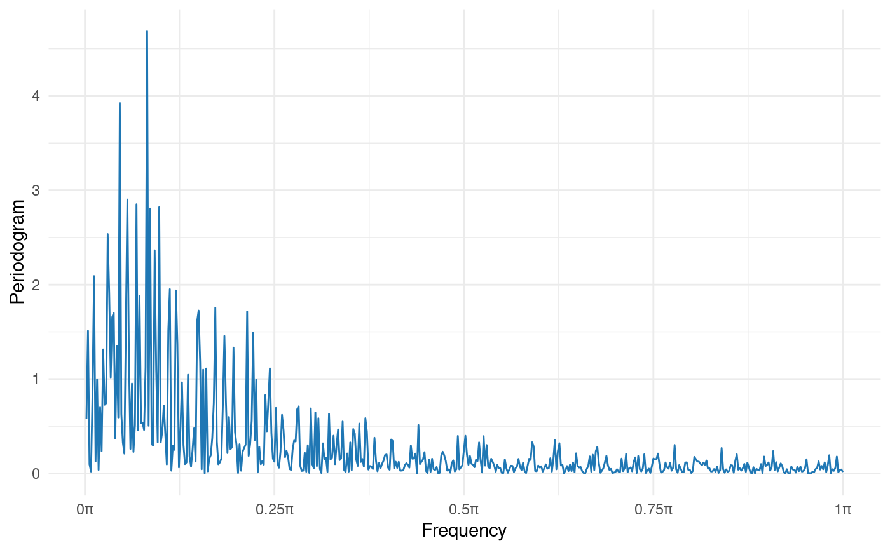

This function computes the periodogram from a stationary time serie. Returns the periodogram, its graph and the Fourier frequency.
periodogram(y, plot = TRUE, include.taper = FALSE)
| y | (type: numeric) data vector |
|---|---|
| plot | (type: logical) logical argument which allows to plot the periodogram. Defaults to TRUE. |
| include.taper | (type: logical) logical argument which by default is
|
A list with with the periodogram and the lambda values.
The tapered periodogram it is given by
$$I(\lambda) = \frac{|D_n(\lambda)|^2}{2\pi
H_{2,n}(0)}$$ with \(D(\lambda) = \sum_{s=0}^{n-1} h
\left(\frac{s}{N}\right) y_{s+1}\,
e^{-i\,\lambda\,s}\), \(H_{k,n} = \sum_{s=0}^{n-1}h
\left(\frac{s}{N}\right)^k\,
e^{-i\,\lambda\,s}\) and \(\lambda\) are Fourier frequencies defined as
\(2\pi k/n\), with \(k = 1,\,\ldots,\, n\).
The data taper used is the cosine bell function,
\(h(x) = \frac{1}{2}[1-\cos(2\pi x)]\). If the series has missing data,
these are replaced by the average of the data and \(n\) it is corrected by
$n-N$, where \(N\) is the amount of missing values of serie. The plot of
the periodogram is periodogram values vs. \(\lambda\).
For more information on theoretical foundations and estimation methods see Brockwell PJ, Davis RA, Calder MV (2002). Introduction to time series and forecasting, volume 2. Springer. Dahlhaus R, others (1997). “Fitting time series models to nonstationary processes.” The annals of Statistics, 25(1), 1--37.
fft, Mod,
smooth.spline.
# AR(1) simulated set.seed(1776) ts.sim <- arima.sim(n = 1000, model = list(order = c(1, 0, 0), ar = 0.7)) per <- periodogram(ts.sim) per$plot